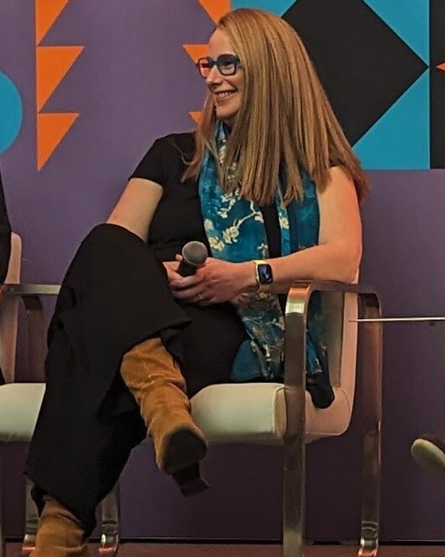

Leadership & service
The human problem
comes first.
I build organizations that can turn difficult problems into useful systems. That takes technical judgment, business ownership, and people who have the confidence and authority to do their best work.
Founder & CEO · Bast AI
Build a company around understanding.
I founded Bast to build explainable AI for healthcare and other regulated institutions. I lead engineers and domain experts, connect their work through shared standards, and own client outcomes from scoping through production.
We build the knowledge layer underneath AI so answers can be traced to evidence and uncertainty is visible. Our work helps people understand care and access expertise in difficult environments.
Over four years, I built the business, its teams, and its partnerships, securing $1.5M in revenue and $750K in investment. I also led the transition to agentic delivery, with human review of every change.
Explore Bast’s work →Business & technical leadership
Grow the business. Grow the people.
At IBM, I owned the Content Intelligence and AI at Scale businesses, led their teams, and carried responsibility for their P&Ls. I established the Trustworthy AI Center of Excellence and recruited its leadership.
As Chief Data Officer for IBM’s services division, I led workforce transformation and large-scale endpoint remediation through enterprise disruption. The work helped people move into new roles while addressing urgent security and data-protection needs.
I created the data-science profession and secured its accreditation through The Open Group, building the skills and professional standards needed to deliver AI at global scale.
IBM Distinguished Engineer, appointed 2016.
Science, education & AI
Steward institutions that matter.
My board work carries the same commitment as my work in technology: help institutions serve people better, and keep the human purpose visible as they change.
- Denver Museum of Nature & ScienceBoard of Trustees
- Maryville UniversityBoard of Trustees
- Northwestern University · CASMIAdvisory Board, Center for Advancing Safety of Machine Intelligence
Policy, professions & learning
Make the difficult questions discussable.
I have testified before the Colorado Senate Judiciary Committee on AI consumer protection and joined public conversations about how we govern technology. I write and speak about human judgment, explainability, and the responsibilities of the people building and using AI.
Developing people is part of this work: from the data-science profession to sponsorship, mentoring, and helping others see what they are capable of doing.
Talks & conversations →
An anthropologist’s perspective
I started my career in ruins.
Studying archaeology and anthropology taught me to look for the people behind the artifacts: what they understood, what they valued, and how they made sense of their world.
I bring that perspective to organizations and technology. Understanding the human context is where useful work begins.
Continue the conversation.
For leadership opportunities, board service, speaking, or a thoughtful exchange of ideas, email me or connect on LinkedIn.